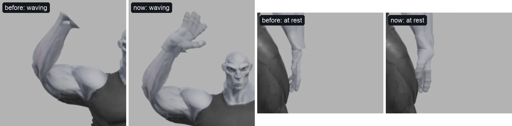
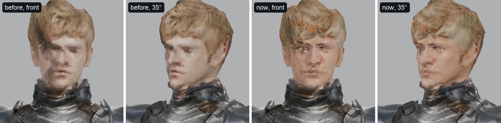

CharForge: rigged, animated game characters from a few words or one image, on a laptop
A living research paper - method, measurements and open problems, revised as the experiments run
We describe CharForge, a pipeline that turns a few words or a single picture into a game-ready character - a textured mesh with a standard skeleton, modelled hands, a face rig and eighteen animation clips, exported as glTF and FBX - running end to end on one Apple Silicon laptop with local models only. A second lane adds new moves from generated video: a reference-to-video model films the character performing a written move, a pose model reads the video, the nearest motion capture is retrieved and bent toward it, and the character's own skinned mesh is optimised until it lies on the video. Across four moves in three art styles the rig's silhouette overlaps the video's figure at IoU 0.771-0.844 (from 0.609-0.751), with joints 0.053-0.118 torso lengths from the video's. The work is organised as a record of measured decisions: 29 experiments, each with its question, metric and result, and what was dropped kept beside what was kept. Several of the largest errors we found were in our own measurements - a comparison video running 25% fast, a score dip that was the pose model misreading our render, face positions read in 3.9 mm steps - and we report how each was caught. This is a living paper: its tables are regenerated from the pipeline's measurement files, and its roadmap (11 planned or open experiments) is the project's.

1 Introduction
A game character is more than a mesh. It needs a skeleton with the bone names an engine's animation library expects, skin weights that bend cloth without tearing it, hands with fingers, a face that can blink and speak, a collision capsule, levels of detail, and clips that move its feet without sliding. Image-to-3D models now produce convincing meshes from one picture [1, 2], and research systems produce rigged characters from an image or a prompt [3, 4, 5]; hosted tools and auto-riggers promise the rest [6, 7, 8, 9]. Two things are still hard. The first is the gap between a generated mesh and a character that deforms well: generated topology has no edge loops where joints bend [10], parts the generator fused (an arm to a hip, a vest to a sleeve) cannot move apart, and a rig built on them shows it in the first wave. The second is motion that is not in a library: a spell, a victory cheer, a particular roundhouse kick.
CharForge is our answer under a hard constraint: everything runs locally, on a 24 GB M5 MacBook, with openly available models. It is also an experiment in method. Each stage exists because a measurement showed the stage before it failing in a specific way, and each decision is recorded with the number that made it (Appendix A). This paper is the curated account of that record; the chronological version is the lab notebook.
Our contributions:
- An end-to-end local pipeline from a few words or one image to an engine-ready character (glTF and FBX, Mixamo bone names, LODs, capsule, face morphs, 18 clips) in about 41.3 minutes of median stage time (Section 3, Section 4).
- Generated-mesh repair for rigging: arms cut free of the bodies they were generated against, modelled hands sized to the forearm they end, garments bound to the bone they move with, loose pieces carried along (Section 4.4, Section 4.6).
- Moves from generated video onto the character's own rig: retrieval, a fit on the video's own body, and analysis-by-synthesis refinement of the skinned mesh, with hands and feet (Section 4.9).
- A measurement suite - silhouette and joint fidelity against the video, a per-stage breakdown that separates the rig's error from the scorer's, and synchronised four-view renders with joint readouts - and an account of the errors it found in itself (Section 5).
- A living, reproducible record: every table here is rebuilt from the pipeline's measurement files, and the experiment tracker is the project's roadmap (Section 9).
2 Related work
2.1 Characters from an image or a prompt
Image-to-3D generators. TRELLIS [11] and its successor TRELLIS.2 [1] generate meshes with physically based materials from structured sparse-voxel latents (a 10243 asset in about 9.6K tokens); Hunyuan3D 2.0 and 2.1 [12, 2] pair a shape diffusion transformer with a texture painter and produce PBR materials. Both families are general-purpose: they model a character as one surface, which is the root of most of what CharForge repairs. A practitioner's survey of hosted and open generators [10] recommends the same two-step workflow we use - draw a clean reference with an image model, then lift it to 3D - and notes the same weakness: generated topology lacks deformation loops at the joints. Hosted services built on these models [9, 13] add rigging and preset clips; their free tiers can be as limited as an untextured OBJ at a fixed face count [13].
Character-specific systems. CharacterGen [3] canonicalises a character in any pose to four A-pose views with an image-conditioned multi-view diffusion model, reconstructs it with a transformer sparse-view model, and back-projects the views into a texture with a depth test and Poisson blending [14]; it rigs with AccuRIG [6]. Make-A-Character [4] takes the opposite route: a language model parses the prompt into attributes, a portrait is generated and fitted onto a fixed, production-rigged template (MetaHuman) using 431 dense facial landmarks, hair is built as strands, and garments are matched from a library by CLIP similarity. Make-A-Character 2 [5] starts from a single portrait, corrects its lighting and skin tone, and calibrates a facial skeleton for expressive animation. Template methods get rigging and faces for free but not the look of an arbitrary character; generation methods get the look but inherit the generator's topology. CharForge generates the character (like CharacterGen) and then builds the rig from the generated solid itself.
Characters from drawings. Animated Drawings [15] rigs a child's drawing in 2D. DrawingSpinUp [16] lifts a drawing to 3D, removes and later restores its view-dependent contour lines, thins single-line limbs with a skeleton-guided deformation, rigs with Mixamo's auto-rigger from eight front-view keypoints and assigns each vertex to its nearest bone [17]; its authors report surface adhesion where the drawing has self-occlusion, the same failure our arm cut addresses. Akman et al. [18] go from stick figures to 3D bodies with a variational autoencoder and animate by interpolating in its latent space.
2.2 Rigging and skinning
Pinocchio [19] embeds a template skeleton in a mesh and computes weights by heat diffusion; RigNet [20] learns joints, connectivity and weights; UniRig [21] predicts skeletons autoregressively with a skeleton-tree tokenisation and was trained on over 14,000 rigged models. Commercial auto-riggers place a humanoid skeleton from guide markers - AccuRIG [6] with correctable markers and finger counts, PINOC [7] with mirrored markers from chin to ankles, Rig Lab [8] fully automatically, but with each hand a single joint. Linear blend skinning [22] is what engines apply; it collapses bent joints, which dual quaternion skinning [23] avoids by blending rotations as rotations. Our weights follow the idea of geodesic voxel binding [24] - distance measured through the voxelised body rather than through the air - so a vest glued to an arm is not near the arm's bone.
2.3 Motion from video
Human pose models read 2D joints from images: ViTPose [25] for the body, DWPose [26] for the whole body including 21 points a hand. Recovering 3D motion from them is usually done by fitting a parametric body such as SMPL [27] - by optimisation, as in SMPLify [28], or by regression, as in HMR, 4D Humans and WHAM [29, 30, 31], the last grounded in the world with foot contact. We do not fit a parametric body: the target is the character's own skeleton and mesh, whose proportions (a cartoon's head, an anime character's legs) no human body model shares. Instead we retrieve the nearest clip from a motion-capture library [17] by dynamic time warping [32] of its 2D projections, bend it toward the video, and refine the character's own skinned mesh against the video in the spirit of SMPLify. The videos themselves come from a reference-to-video model [33] conditioned on the character's picture, so the performer already looks like the character.
3 System overview
CharForge has two lanes that share one skeleton (Figure 2). The character lane (charforge.py
make, 23 stages) builds a character once, from a prompt or an image. The move lane (charforge.py
move) adds a move from a generated video to any character; because every clip it produces is on the standard
Mixamo skeleton, one video serves every character. Both lanes are Python and headless Blender [34] around
local models: an image model for the reference [35], TRELLIS.2 [1] through its MLX port
[36] for the 3D model, a human parser [37] for part labels, ViTPose [25] and DWPose
[26] for pose, U2-Net [38] for cut-outs, a small language model [39] for prompts, and a
reference-to-video model [33] through ComfyUI [40]. A browser application, the Studio, runs the same stages
for a user without the command line (Figure 8).
Character lane · charforge.py make
- Prompt, written outa local model fills age, build, skin, hair, face and each garment
describe - Reference imageA-pose, cut out, arms checked
reference - 3D modelTRELLIS.2, checked from the front; second pass on side and back views
generate · multiview - Parts and jointsorbit renders, human parser, joints traced to limb centre lines
views · parts · skeleton · joints - Solid and handsone closed solid; arms cut free; modelled hands
solidify · hands - Mesh and texture60k triangles, baked PBR; the reference projected back, the face in detail
retopo · texclean · texture - Rigweights through the body, finger bones, springs, metres, T-pose
weights · rig · springs · frame · tpose - Facejaw and five shapes where eyes and mouth are found
face - 18 clips, packagecaptures retargeted with planted feet; glTF, FBX, LODs, manifest
animate · package · web
Move lane · charforge.py move
- Write the movetimed beats in the video model's prompt format
- Generate the videothe character's reference in, 5 s of it performing the move out
- Read the posefigure cut out of each frame; 17 body points, 21 a hand
- Nearest capturedynamic time warping over 2,453 clips and 16 camera angles
- Fiteach bone bent toward the video on the video's own body
- Retarget and aimonto the character's rig, its limbs aimed along the fit
- Refinethe skinned mesh optimised until silhouette, joints, face and hands lie on the video; feet on its floor
Where the time goes. Table 1 gives the median time of each stage over every build logged on this machine. Four stages - the second, multi-view 3D pass, the reference image, the first 3D pass and the texture projection with its detailed face - take 37 of the 41.3 minutes; everything that turns the generated mesh into a rigged, animated character takes under five. The times include any wait for the GPU while another job held it (Section 4.10), so they are what a user waited, not each stage's own cost; timing each stage alone, and cutting what the measurements say is not worth its time, is experiment E106.
| stage | median min | p90 min | builds | share of the median total |
|---|---|---|---|---|
| reference | 8.0 | 22.5 | 9 | 19% |
| generate | 7.8 | 19.3 | 11 | 19% |
| multiview | 16.1 | 24.0 | 11 | 39% |
| views | 0.1 | 0.1 | 12 | 0% |
| parts | 0.1 | 0.2 | 12 | 0% |
| skeleton | 0.1 | 0.1 | 12 | 0% |
| solidify | 0.3 | 0.4 | 11 | 1% |
| joints | 0.1 | 0.1 | 12 | 0% |
| hands | 1.1 | 1.6 | 27 | 3% |
| retopo | 1.0 | 1.7 | 34 | 3% |
| labels | 0.0 | 0.0 | 34 | 0% |
| texclean | 0.1 | 0.1 | 32 | 0% |
| texture | 5.0 | 9.8 | 34 | 12% |
| weights | 0.1 | 0.1 | 34 | 0% |
| rig | 0.0 | 0.1 | 43 | 0% |
| springs | 0.0 | 0.0 | 41 | 0% |
| frame | 0.0 | 0.0 | 43 | 0% |
| tpose | 0.0 | 0.0 | 43 | 0% |
| face | 0.1 | 0.3 | 43 | 0% |
| animate | 0.8 | 1.6 | 57 | 2% |
| refine | 0.0 | 7.7 | 53 | 0% |
| package | 0.2 | 0.4 | 54 | 0% |
| web | 0.2 | 0.5 | 53 | 1% |
refine is zero for characters without moves from video.4 Method
We describe each stage by what it does and the failure that made it necessary. Experiment identifiers link to the tracker, where each has its question, metric and result.
4.1 A few words, written out
Users type little: "a boy scout", "gray alien that is extremely muscular". Passed straight to an image model, the first came back a grown man at the height slider's default of 1.72 m and the second a grey clay sculpture - no clothes, no colour. Following Make-A-Character's use of a language model to parse a prompt into attributes [4], a local model [39] fills a fixed set of fields - who, age, build, skin, hair, face, top, bottom, shoes, extras - and the sentence is composed from them in code. Asked instead for free prose under rules, 3B-8B models broke a rule in about one prompt in two ("holding a wooden badge", "standing at 1.5 meters tall"); fields that name a prop, a pose or a height are now dropped, and the age group is taken from the prompt's own words, not the model's. The height follows the age group unless the user sets it, and a name that exists is refused rather than overwritten E016.
We scored nine local models on five prompts against four rules each E015; Table 2 gives the results. Gemma 2 9B kept all 20 checks but took 15.0 s a prompt; Gemma 4 e4b kept 19 in 9.2 s and is the default. Gemma 4 answered nothing until its "thinking" mode was switched off, which only models that report the capability are sent. The Studio shows the written-out text before anything is drawn, to edit.
| local model (Ollama) | rules kept | time a prompt |
|---|---|---|
| gemma2:9b-instruct-q5_K_M | 20 / 20 | 15.0 s |
| gemma4:e2b | 19 / 20 | 4.8 s |
| gemma4:e4b | 19 / 20 | 9.2 s |
| llama3.2:3b | 19 / 20 | 58.3 s |
| gemma3:4b | 18 / 20 | 7.8 s |
| qwen2.5vl:7b | 16 / 20 | 14.2 s |
| qwen2.5:7b | 15 / 20 | 10.2 s |
| No answer (errors on every prompt): ministral-3:8b, mistral-nemo:12b | ||
4.2 The reference image
Everything is generated from one picture of the character standing in an A-pose on a plain background. We compared two local image models on six characters with the same prompt and seed E013: Krea 2 drew one broken figure in six (a jacket with no head or legs, which the automatic checks passed, since it still has "arms"), Qwen-Image 2.1 [41, 35] none, with a real alpha cut-out every time. Qwen read "arms slightly away from the body" literally - wrists 0.28-0.37 torso lengths from the hips, close enough to fuse in 3D - until the angle was spelled out (0.58-0.70). It is the default; Krea stays a flag away because Qwen-Image's licence is research-only.
A reference in the wrong pose costs half an hour before it shows. Bo, a cartoon chef, was drawn with his fists on his hips despite the prompt; the 3D model fused them and his hands came out in shreds at his belt. The pose model now reads every reference's arms: our references put the wrists 0.60-0.79 torso lengths from the hips, Bo's 0.33, and below 0.45 the picture is drawn again on a new seed E028.
4.3 The 3D model, checked from the front
TRELLIS.2 [1] builds a mesh with PBR textures from the reference. On four characters its first pass built the picture's plain backdrop into the model as a solid board - in front of the figure, behind it, or through its legs - which later stages cut into grey sheets hanging from the arms (Figure 3). Rendered from the front, a sound model lies on the picture's silhouette at IoU 0.9-0.94; these lay at 0.35-0.44. The model is now checked from the front, and below 0.8 made again from the picture cut out by a salient-object model [38], then on a new seed E014: Gray 0.42 → 0.931, Knight 0.4 → 0.917, Kaito 0.35 → 0.905, the boy scout 0.35 → 0.909.

A second pass conditions TRELLIS on side and back views repainted from renders of the first. Scored against a generated 360° video of Mara E012, the second pass moved the mean silhouette IoU from 0.778 to 0.781, and three turntable frames as extra views to 0.786: more views barely change the shape, and where views disagree the model averages them (Mara's braid, over her shoulder in the reference and down her back in the video, was lost at the back). The second pass is also the slowest stage (Table 1); whether it earns its place is part of E106.
4.4 Solid, joints, arms and hands
The generated mesh is closed into one solid (OpenVDB level sets [42]), its flakes, inner shells and shards removed. Orbit renders give per-vertex part labels from a human parser [37] and 3D joints from the pose model; each joint is then moved onto the centre line of its limb, traced through the solid. A traced line can double back: on knight2 the arm's trace reached his gauntlet and turned 36 cm back up the vambrace, and the hand was placed a forearm's length behind the wrist; the trace now ends at its farthest point E018.
Arms cut free. Generators glue arms to whatever they hang against - a hip, a vest, a bag. Rigged as is, the surface between moves with both, and a raised arm pulls the vest into wings. The arms are cut free below the armpit (T-pose faces stretched past 3x: 1,150 → 390 on Pip), thin webs opened first, and the cut checked slab by slab along the arm and repeated where a join survives: 3-9 joined slabs an arm after the first cut, 1-3 after the second E025 E026.
Modelled hands. Generated hands are paddles. They are carved off at the wrist and replaced by a modelled hand (a signed distance function with anatomical proportions, 15 finger bones) unioned onto the solid. The modelled wrist was a person's; on Gray, "extremely muscular", whose forearms measure 11-13 cm at the wrist, each arm ended in a flat step like a cuff and the waving hand read as a small hook (Figure 4). A sleeve's cuff measures just as wide, so width cannot tell a bulky forearm from a sleeve - but the part labels can: the vertices just above the cut are labelled bare skin on 0.92-1.00 of a bare forearm and 0.13 or less under a sleeve or gauntlet. On a bare forearm the hand is now scaled across its width and thickness to meet it, up to 1.6x (Gray 1.60x) E021.

4.5 Mesh and texture
The solid is decimated to about 60,000 triangles, unwrapped, and its colour, normal, roughness/metal and ambient occlusion baked from the generated model. Smart UV projection on a smoothed copy folded islands onto themselves wherever the copy curls (224-2602 faces per character sharing texels with another surface - the backs of Pip's sleeves showed his vest's paint); the overlapping faces are unwrapped again as their own islands at one texel density, leaving 6-31 E027.
The bake is soft, so the reference is projected back onto the mesh, aligned to renders of the mesh by a similarity transform on the silhouettes and then by optical flow [43], together with the repainted side and back views; the reference sets the palette, colour-matched group by group. Like CharacterGen's back-projection [3] a view only paints surfaces it sees face-on and unoccluded; unlike it, views are blended by weight rather than by Poisson blending [14] - comparing the two is E105. The face is painted from a detailed image: the reference's face region enlarged 3-5x and re-detailed by the image model at low strength, laid on through a finer flow of its own.
That face flow is refused when it would move features more than 2.5% of the figure's height, because on drawn faces a larger warp painted a second pair of eyes. Knight's generated face sat 2.5% from his picture's: refused, the picture went on unaligned, his fringe across one eye and every feature doubled; forced, the eyes smeared into bands. For realistic characters whose face the flow refuses, the front view now leaves the face and fringe to the generator's own texture, which is softer but lies on its geometry E022 (Figure 5). The face stage then found Knight's eyes and mouth, and he has a face rig. The price is visible too: his fringe carries the generator's blotchier colour. The modelled hands take the body's skin tone from warm, skin-coloured texels of the face; a grey alien has none, and Gray's hands fell back to a fixed human peach until the face's own colour became the fallback E020.

4.6 Weights and rig
Skin weights come from distances measured through the solid body rather than through the air [24], so a vest that touches an arm is still far from the arm's bone. Three rules handle garments the generator fused to the body E025. The arm's own surface is flooded from the sleeve's outside starting past the cut (0.30 of the upper arm), so it does not walk onto the vest; a vest's armhole moves with the collarbone where colour tells the torso garment from the sleeve; and an upper garment near the hips follows the pelvis rather than the thighs, so a jump does not pull a hem into a W. Loose pieces the generator left (Kaito came as 40: hair spikes, the inner toes of his sandals) each ride rigidly with the body part nearest them. The skeleton uses Mixamo's bone names [17] - 64 bones with fingers and a jaw - so any Mixamo animation applies; bone chains are hung on what should swing (braids, ponytails, bags). Engines skin linearly [22]; the playground patches three.js [44] to dual quaternion skinning [23], which cuts jacket faces collapsed below half their area during the walk from 8.8% to 6.1% and during the run from 11.5% to 6% with the same weights E024.

4.7 Face rig
The head is rendered from the front, unlit, together with the world position under every pixel. Eyes are found as blobs and the mouth by its colour and the pose model's face points; from them the face stage cuts the mouth open, adds a jaw bone and five shapes (blinks, smile, raised brows, pucker). It places nothing it cannot find: on Bo, eyes behind round glasses and a mouth under a moustache, it builds no face rig rather than a guessed one E109. Two characters lost their face rig because the frame stopped above the chin on a tall head E017. The position render had its own error: written as position + 4 into EEVEE's half-float film, every position was read in 3.9 mm steps, 2.5 mm off on average; written around the frame's centre the step is 0.5 mm E019.
4.8 Clips, feet and packaging
Eighteen motion captures (idle, walk, jog, run, sprint, backpedals, strafes, turns, crouch, jump, fall, land, wave) are retargeted onto the rig with the fingers. Feet are planted by clip selection, grounding and foot IK, and the playground drives all locomotion from one stride clock, so the foot on the floor slides a median 3.6% of ground speed (Section 5.5) E029. The package follows engine conventions: real height in metres, origin on the floor under the pelvis, glTF [45] and FBX with three levels of detail, and a manifest with the collision capsule, each clip's ground speed, direction and contact phase, the jump's take-off and landing, and the face's morph targets.
4.9 Moves from generated video
The video. The character's reference image and a written move - timed beats: ready, the move, recovery - go to a reference-to-video model [33], which returns 5.2 s at 24 fps of the character performing it (32-48 minutes on the laptop, E030). Because the performer is the character, its proportions are close to the rig's.
Retrieval. ViTPose [25] reads 17 points in every frame. The sequence is matched against a library of 2,453 captures [17] by dynamic time warping [32] of each clip's 2D projection from 16 camera angles, mirrored or not. In a self-test on 40 library clips shown from random angles with pose noise, a stretch and a speed change, the right clip or an exact duplicate ranked first every time, and the angle was off by 5.4° (median) E001.
The fit. A move the library lacks is approximated by its nearest capture, then bent toward the video bone by bone: each bone's direction in the image from the video, its depth from its length - kept from the capture where the two agree within the pose model's noise, and only when the capture misses the video by more than 1.2 times that noise E002. The bone lengths are the video's own, measured where the capture shows each bone flat to the camera E003: with a capture actor's lengths, Aoi's short torso bent into a 28° lean. Table 3 shows the trade-off on the self-test: on the actor's own body the capture's lengths are, as they must be, slightly better; on another body - the real case - the video's own lengths are clearly better. An arm's two depth signs are chosen together, so an elbow cannot bend past what the library's elbows ever do E007.
| 40 moves each | capture as retrieved | fit, capture's bone lengths | fit, the video's own lengths |
|---|---|---|---|
| in the library, the actor's own body | 0.031 | 0.025 | 0.024 |
| left out of the library, the actor's own body | 0.269 | 0.189 | 0.212 |
| in the library, another body | 0.132 | 0.216 | 0.129 |
| left out of the library, another body | 0.324 | 0.311 | 0.259 |
Onto the character, and refined. The fitted clip is retargeted by copying rotations and then aiming the character's own limbs, spine and head along the fitted bones, which removes rest-pose differences of 4-12° at the thighs and 16-27° at the collarbones E004. Finally the character's own skinned mesh is posed in PyTorch - forward kinematics mirroring Blender's - projected with the video's camera, and 20 bones a frame are optimised against the video in the manner of SMPLify [28], but on the character rather than a body model E005: the silhouette's chamfer both ways, the joints, the face points, DWPose's hands [26] (wrists, forearm twist and 30 finger joints E006), a prior to the fitted clip, smoothness, joint limits, and a bend limit at the elbow. The feet are then put back on the video's floor line E008.
4.10 Running it on a laptop
Everything runs on a 24 GB M5 MacBook with shared memory. Two jobs on the GPU at once do not merely slow down: two refines corrupted each other's results (Aoi's silhouette 0.672 → 0.647, the kick's 0.733 → 0.485, where each alone reaches 0.82-0.86; one ended in NaN), and a 3D pass beside another job was stopped by the operating system's GPU watchdog. A machine-wide lock now serialises every GPU step of every job E023. The video model is a 33-billion-parameter model; running it here took rewriting its float8 scales for a GPU without float8 and merging its LoRA offline, since patching it at load doubled its memory E030. The Studio (Figure 8) queues jobs, survives its own restart mid-job, and shows each job's stage and time left.

5 Evaluation
5.1 Measures
We measure what a player would see, in units that do not depend on the character's size.
- Joint error (moves from video): the character's clip is rendered at the video's own frame times from the video's camera angle; the same pose model [25] reads the video and the render, the hips are laid on each other frame by frame with one scale for the clip, and the mean distance between the twelve body joints is reported in the video's torso lengths (shoulders to hips; 0.05 is about 2.5 cm on an adult).
- Silhouette IoU: the render's outline against the video's figure, cut out by a salient-object model [38].
- Face error: nose, eyes and ears about their centre, in torso lengths - which way the head turns.
- Hands: DWPose [26] on both, each hand it is sure of; the 21 points about the wrist in palm lengths (mean and median), how often the palm faces the video's way, and the angle between the hands' pointing directions.
- Per stage: the same joint error for the fitted points, the FBX written from them, the character's own skeleton, and the pose model's reading of the render - which separates the rig's error from the scorer's.
- Four views: the clip rendered orthographically from the video's camera, the side and above, at one scale on a 10 cm grid, with each elbow's and knee's bend and each shoe's height above the floor read out per frame.
- Foot slip: while a foot is on the floor, how far its lowest vertex slides between frames, as a share of the gait's ground speed, driven by the playground's own controller; and the deepest a sole goes through the floor.
- Front silhouette IoU of a 3D model against its reference picture, rendered from the front.
5.2 Characters
Table 4 lists the 13 characters built so far - 10 in the public playground - with what each was made from and the checks this paper describes. 12 have a face rig; the others' faces could not be read and were refused (Section 4.7). Build times are in Table 1.
| character | style | made from | height | triangles LOD0 / 1 / 2 | face rig | clips | checks |
|---|---|---|---|---|---|---|---|
| Aoi | anime | “a young anime adventurer girl with a long high ponytail of…” | 1.62 m | 76,578 / 30,631 / 11,485 | jaw + 5 shapes | 19 | |
| Bo | stylized | “a cheerful cartoon chef with a tall white chef's hat, round glasses…” | 1.60 m | 59,981 / 23,991 / 8,997 | refused | 18 | |
| Juno | realistic | “a woman in a red hooded windbreaker, grey cargo trousers and black…” | 1.70 m | 66,015 / 26,406 / 9,902 | jaw + 5 shapes | 18 | |
| Kaito | anime | “an anime ninja boy with spiky black hair, a long red scarf, a…” | 1.70 m | 72,646 / 29,057 / 10,896 | jaw + 5 shapes | 18 | front 0.905 |
| Knight | realistic | “a young knight in dented steel plate armour over a blue surcoat…” | 1.80 m | 67,380 / 26,951 / 10,107 | jaw + 5 shapes | 18 | front 0.917 |
| Mara | realistic | “a young woman field researcher with a long dark brown braided…” | 1.68 m | 69,434 / 27,773 / 10,414 | jaw + 5 shapes | 20 | |
| Pip | stylized | “a cheerful cartoon courier with messy orange hair and freckles, a…” | 1.55 m | 78,233 / 31,293 / 11,733 | jaw + 5 shapes | 19 | |
| Rowan | realistic | “a man in a green bomber jacket with medium-length wavy hair” | 1.78 m | 67,217 / 26,886 / 10,082 | jaw + 5 shapes | 18 | |
| Vex | stylized | an image | 1.72 m | 63,979 / 25,591 / 9,596 | jaw + 5 shapes | 18 | |
| Wren | realistic | “a woman in a brown leather jacket with a satchel and a braid” | 1.68 m | 64,617 / 25,846 / 9,692 | jaw + 2 shapes | 18 | |
| boyscout (local) | stylized | “a boy scout” | 1.20 m | 76,719 / 30,686 / 11,506 | jaw + 5 shapes | 18 | front 0.909 |
| gray (local) | stylized | “Gray Alien That is Extremely Muscular and looks like a gigachad” | 1.76 m | 73,785 / 29,514 / 11,067 | jaw + 5 shapes | 18 | front 0.931, hands ×1.60 |
| knight2 (local) | stylized | “a young knight in steel armor” | 1.85 m | 69,910 / 27,964 / 10,486 | jaw + 5 shapes | 18 | front 0.931 |
5.3 Moves from video
Table 5 follows four moves in three styles from the first measurement to now. The first column is the pipeline as it was before this line of work (the nearest capture, retargeted), the second after fitting on the video's own body and aiming the character's limbs, the third after the refine stage, the hand terms and the floor. Silhouette overlap rose from 0.609-0.751 to 0.771-0.844. At rest the same models lie on their reference pictures at 0.90-0.93, so most of what remains is in the motion.
| move | start | own body + aimed limbs | now: joints · IoU | face | hands mean (median) | palm facing | max elbow |
|---|---|---|---|---|---|---|---|
| Mara · punch combo | 0.086 · 0.751 | 0.073 · 0.796 | 0.053 · 0.844 | 0.012 | 0.20 (0.18) | 97% | 149° |
| Mara · roundhouse kick | 0.187 · 0.622 | 0.121 · 0.747 | 0.069 · 0.830 0.049 without 7 misread frames | 0.013 | 0.14 (0.12) | 100% | 150° |
| Aoi · spell cast | 0.214 · 0.609 | 0.167 · 0.651 | 0.118 · 0.771 | 0.032 | 0.33 (0.17) | 94% | 151° |
| Pip · victory cheer | 0.127 · 0.616 | 0.114 · 0.714 | 0.069 · 0.817 | 0.020 | 0.20 (0.19) | 99% | 130° |
The hands show why means alone mislead. Aoi's hand error is 0.33 palm lengths in the mean but 0.17 in the median: in about twenty frames her jacket sleeve, which rides the upper arm, sticks out past her bent elbow, and DWPose reads the sleeve's light lining as her hand. That is a skinning limit, not a hand error (Section 8).
Table 6 breaks each move's error down by stage. The fit is close to the video everywhere (0.053-0.118 after the refine, 0.037-0.039 for the fitted points); writing it as an FBX and moving it onto the character adds error, mostly the capture's and the character's body proportions. The last column counts frames where the pose model's reading of the render disagrees with the rig's own skeleton by more than 0.3 torso lengths - the scorer's error, not the rig's (Section 5.6).
| move | fit | FBX | rig skeleton | render (read) | misread frames |
|---|---|---|---|---|---|
| Mara · punch combo | 0.037 | 0.060 | 0.056 | 0.050 | 0 |
| Mara · roundhouse kick | 0.039 | 0.068 | 0.076 | 0.071 | 7 |
| Aoi · spell cast | 0.039 | 0.100 | 0.125 | 0.122 | 0 |
| Pip · victory cheer | 0.045 | 0.091 | 0.055 | 0.070 | 0 |

5.4 Seeing every move from four sides
One camera cannot see depth. A clip can match its video from the video's angle while an arm folds back through itself behind the figure. We render every move from the video's camera, the side and above at once, beside the video, with the joints read out (Figure 10) E009. It found three faults the scores had missed: Aoi's elbow bent to 176° (the forearm back through the upper arm) for 16 frames, now held at 150° E007; the feet of every move standing off the floor after the refine, Aoi's lowest shoe 3.1 cm up on average, now 0.6 cm E008; and a comparison video running 25% fast E010. It also cleared the rig of a fault the score seemed to show E011.


5.5 Feet
Table 7 gives foot slip for every gait of the characters in the playground: a median of 3.6% of ground speed over 81 gait-character pairs, and at most 18.2%, against 30-79% before clip selection, grounding and foot IK E029. The worst are strafes and crouch-walks on characters whose proportions differ most from the capture actor's.
| gait | Aoi | Juno | Kaito | Knight | Mara | Pip | Rowan | Vex | Wren |
|---|---|---|---|---|---|---|---|---|---|
| walk | 1.0% | 2.7% | 1.3% | 1.5% | 2.5% | 4.5% | 3.6% | 4.6% | 7.5% |
| jog | 1.7% | 3.8% | 1.6% | 1.3% | 2.7% | 3.3% | 2.0% | 2.5% | 2.6% |
| run | 0.7% | 2.3% | 1.2% | 1.0% | 2.7% | 2.9% | 3.3% | 2.2% | 2.2% |
| sprint | 1.1% | 2.9% | 4.3% | 1.1% | 5.4% | 8.8% | 5.1% | 9.4% | 4.6% |
| walk back | 4.2% | 6.0% | 2.6% | 1.2% | 7.4% | 10.0% | 10.3% | 5.3% | 6.6% |
| jog back | 1.0% | 2.4% | 2.0% | 1.4% | 5.3% | 5.6% | 5.1% | 6.9% | 2.8% |
| strafe left | 2.0% | 6.9% | 8.8% | 4.5% | 5.0% | 14.6% | 6.2% | 4.3% | 4.6% |
| strafe right | 3.8% | 3.4% | 7.5% | 4.8% | 5.9% | 7.2% | 7.5% | 4.2% | 5.3% |
| crouch walk | 3.5% | 2.5% | 1.5% | 1.4% | 2.6% | 3.9% | 3.3% | 18.2% | 11.5% |
| deepest sole through the floor | -0.2 cm | -0.3 cm | -0.5 cm | -0.0 cm | -0.5 cm | -0.5 cm | -0.3 cm | -0.7 cm | -0.5 cm |
5.6 Validity of the measurements
Several of the largest errors we found were in the measuring, not the pipeline. We list them because each would have sent the work in the wrong direction.
- The comparison ran fast E010. The side-by-side and four-view videos resampled the 24 fps video to the renders' 30 fps by taking each video frame once, never twice, so the video played 25% fast and then stood still: the rig seemed to punch 0.2 s late, more as the clip went on. The fidelity score was unaffected, since it renders the rig at the video's own times.
- The scorer misread the render E011. Mara's kick scored 0.069, with a dip to 0.46 at the top of the kick that read as the rig folding its leg. Held against the rig's own skeleton, the pose model's reading of the render was wrong in 7 frames (the skeleton was 0.12-0.14 from the video there, as elsewhere); without them the kick scores 0.049. The four views confirm the leg is at head height.
- Face positions in stairs E019: 3.9 mm quantisation from a half-float render target, found while tracing an unrelated seam.
- Stale caches: the per-stage tool kept its skeleton dumps forever and was scoring a rig two rebuilds old.
Threats that remain: the joint and hand scores compare two readings by the same pose model, so its blind spots cancel as often as they show; everything is 2D against one camera, with depth checked only by eye in the four views; there are four moves, all from generated video of the character itself, not of people; and times include waits for the GPU. Recovering a known clip from a render of it - a 3D ground truth - is the first experiment of the next phase E101.
6 Negative results
Ideas that looked right and measured worse. Each is kept in the tracker so it is not tried again without new evidence.
| idea | measured | instead |
|---|---|---|
| Lift the video's 2D joints to 3D directly | 4x worse than the retrieved capture on moves the library has (0.022 → 0.088 torso lengths) | retrieve, then bend only where the capture misses by more than the noise E002 |
| Depth from the best of the top four captures | worse than the nearest capture's depth: agreeing in the image is not agreeing in depth | the nearest capture's depth |
| A three-quarter camera in the video prompt | no better than front or side over 40 held-out moves | a near-front camera, both arms in view |
| Extra views of the character for the 3D model | turntable IoU 0.781 → 0.786; disagreeing views averaged away a braid | kept only as a check E012 |
| Let the hand term swing the arm to point the hand | hands closer, silhouette −0.005 and Aoi's hands raised to her chin | wrist, forearm twist and fingers only E006 |
| Calibrate all 21 hand points to where DWPose sees them on the rig | worse where the offsets were small (Aoi 0.24 → 0.29) | calibrate the wrist only |
| Require a wrist in front of the torso in the image | from random cameras half of such wrists are behind the body - seen from its back | the rule in the body's own frame E007 |
| Tie Pip's vest to the chest, found by its colour | found exactly; tore the fused surface into streaks at the sleeve | cut the arm free, flood from past the cut E025 |
| Binary part masks for skin weights | surfaces tear where parts meet | smooth weights through the body; dual quaternions at runtime E024 |
| Repair folded UV islands on the shipped mesh down to single faces | atlas coverage 0.58 → 0.42: a third of the texture wasted | unwrap the overlapping faces again as islands E027 |
| Tell a jacket from trousers by the parser's classes | the parser gave the backs of three jackets to the trousers; a crouch showed a pale band | colour, where the garments differ |
| Force the face flow past its gate | Knight's eyes smeared into bands | keep the generator's face E022 |
| Let ComfyUI apply the video model's LoRA | memory doubled; 20 minutes of swapping and no load | merge it offline E030 |
| Skip foot planting on clips from video | Pip's joints 0.114 → 0.128 | plant, then refine |
7 Comparison with other systems
Table 9 sets CharForge beside the systems and tools it is most often compared with, from each one's own paper or page. It is a comparison of what each does, not yet of how well: measured comparisons on the same characters are experiments E103 (auto-riggers) and E104 (generators).
| system | input | 3D from | pose handling | rig | skin weights | fingers | face | motion | runs |
|---|---|---|---|---|---|---|---|---|---|
| CharForge (ours) | few words or one image | TRELLIS.2 [1] | reference drawn in A-pose, checked (E028) | joints traced in the solid, Mixamo names | measured through the body [24] | modelled, 15 bones a hand | jaw + 5 shapes when eyes and mouth are found | 18 captures + moves from generated video | one laptop, local |
| CharacterGen [3] | one image | own sparse-view reconstruction | canonicalised to A-pose by multi-view diffusion | AccuRIG [6] | AccuRIG | AccuRIG | - | retargeted | GPU; <1 min |
| Make-A-Character [4] | text | MetaHuman template fit to a generated portrait | template | MetaHuman | MetaHuman | yes | 52 blendshapes | engine animations | server; ~2 min |
| Make-A-Character 2 [5] | one portrait | template + face reconstruction | template | template, facial skeleton calibrated | template | yes | blendshapes + facial skeleton | co-speech (transformer) | server; <2 min |
| DrawingSpinUp [16] | one drawing | image-to-3D, thinned | front A/T pose assumed | Mixamo auto-rigger (8 keypoints) | nearest bone | - | - | Mixamo via Rokoko | GPU |
| Hunyuan3D (Cinevva) [9] | text, image, up to 4 views | Hunyuan3D [2] | - | automatic | automatic | - | - | preset clips | hosted |
| AccuRIG [6] | a mesh | - | A or T pose | markers, refined | professional-style paint | 0-5 fingers | - | ActorCore library | desktop |
| PINOC [7] | a mesh | - | - | guide markers, mirrored | automatic | yes | - | library + retarget | hosted |
| Rig Lab [8] | A/T-pose GLB | - | - | automatic joints | automatic | no (hand = one joint) | - | 4 procedural clips | hosted |
| UniRig [21] | a mesh | - | any | autoregressive skeleton | predicted | yes | - | - | GPU, open weights |
Three differences matter most. First, where the rig comes from: the research systems either rig a generated mesh with an external auto-rigger (CharacterGen with AccuRIG, DrawingSpinUp with Mixamo's) or avoid rigging a generated mesh at all by fitting a template (Make-A-Character). CharForge rigs the generated solid itself and repairs it for rigging first - arms cut free, hands modelled and sized, garments bound to the bone they move with - because the failures we see are in the mesh an auto-rigger receives, not in the joint placement it would add. Whether a learned rigger such as UniRig [21] would place joints better on our repaired solids is open (E103). Second, fingers and faces: most tools stop at the wrist (Rig Lab treats a hand as one joint) and few rig a face; CharForge models fingers and builds a face rig when it can read the face, and refuses when it cannot. Third, motion: the others retarget library clips; CharForge also makes new ones from generated video and measures them against it.
What we take from them. CharacterGen's multi-view pose canonicalisation addresses the same problem our reference check does (a figure in the wrong pose), upstream; its Poisson blending at view seams is E105. Make-A-Character's library-matched garments and strand hair are one answer to what we cannot do - hair and clothing that move apart from the body E110; its dense landmarks and template face are one answer to faces we refuse E109. The hosted tools' marker-based joint placement is a reminder that a person correcting four markers is cheap; the Studio could offer it.
8 Limitations and open problems
- Fused layers. Hair, braids, bags and layered garments are one surface with what they lie on. Chains on them tear the surface, so Aoi's hair and Mara's braid are rigid, and between Pip's vest and sleeve the armpit stretches with his arms overhead E110.
- A sleeve past a bent elbow. Linear skinning keeps a jacket sleeve that extends past the elbow pointing along the upper arm when the elbow bends far; in Aoi's spell cast the cuffs stick out sideways. Pose-space correctives would reach it E107.
- Joins after the arm cut. 1-3 joined slabs an arm survive the re-cut on several characters; the rig keeps that side of the garment with the arm E026.
- Faces. Faces the stage cannot read get no rig (Bo) E109. Kept from the generator where the reference cannot be laid on them, realistic faces are softer than the picture and the fringe carries the generator's colour (Knight) E022.
- Depth in moves from video is borrowed from the nearest capture, so a move unlike anything in the library is right in the image and approximate in depth E108; the pose model loses poses it rarely saw, on video and on render E011.
- Measurement. No 3D ground truth for motion yet; faults a person sees (a crease, a stretch, cloth through cloth) are still found by eye in renders before they are counted E101 E102.
- Speed. A character takes about 41.3 minutes of stage time, a move 35-50 minutes of video generation; most of the former is two 3D passes and two image-model calls E106.
- Licences. The reference-to-video model's licence has territorial limits and requires attribution in a commercial product; Qwen-Image 2.x is research-only. CharForge is a research project; Krea 2 remains available for references where that matters.
9 Reproducibility and the living paper
Hardware and software. An M5 MacBook with 24 GB of shared memory; Blender 5.2 [34], ComfyUI
[40], Ollama with Gemma 4 [39], TRELLIS.2 through its MLX port [1, 36], PyTorch on
Apple's GPU for the pose models and the refine stage. tools/check_env.py reports anything missing across
the three Python environments before a long run starts. Model files are not in the repository; the README lists where
each comes from and its licence.
Running it. A character: python charforge.py make --prompt "a few words" --name hero, or
--image picture.png; or the Studio, python charforge.py studio. A move from video:
python charforge.py move --name hero --move punch_combo. The measurements: tools/motion_fidelity.py,
tools/motion_stages.py, tools/make_angles.py and blender/foot_audit.py. Built
characters are in the playground and as release packages.
How this paper is kept. The paper is built from the repository by paper/build.py. Its prose is in
paper/sections/; every number in it is named, not typed, and comes from paper/data/metrics.json,
which paper/collect.py regenerates from the pipeline's measurement files, or from
paper/data/baselines.json for numbers measured before a change. References are in
paper/references.json, each checked against its source. The build refuses to write a page with an unknown
number, citation, cross-reference or missing figure. Experiments are recorded in research/experiments.json
before they run - question, method, metric - and completed with their result and decision; the build renders them as
Appendix A and research/TRACKER.md. A change to the pipeline that moves a
number is committed with the data and the paper together, with a line in the changelog
(Appendix B). The lab notebook keeps the day-by-day
record the paper is distilled from.
10 Roadmap
The next phase aims at three things at once: more precise measurement, fewer visible aberrations, and less time per character. Each item is an experiment in the tracker with its metric fixed before it runs.
- A 3D ground truth for motion E101: render a character performing a known clip as a video, run the move lane on it with that clip held out of the library, and measure the recovered clip in joint angles, positions, contacts and jitter.
- An aberration score E102: stretch, collapse, normal flips, self-intersection and floor penetration per frame, for every clip of every character, with the worst frames rendered - so the faults a person spots are counted and ranked.
- Rigging against the field E103: our joints and weights against UniRig and the hosted auto-riggers on the same meshes, scored by E102; corrective shapes at elbows and shoulders E107.
- Time E106: each stage timed alone, and the costly ones - the second 3D pass, the detailed face - ablated against their measured benefit; Hunyuan3D 2.1 against TRELLIS.2 on our references E104.
- Texture seams by Poisson blending E105; depth for moves the library lacks from a world-grounded video model E108; faces the rig will not guess E109; hair and garments as their own layers E110.
References
Role: used CharForge runs it · compared weighed or measured against ours · related context. All links checked 26 September 2026; BibTeX.
- [1] Jianfeng Xiang, Xiaoxue Chen, Sicheng Xu, Ruicheng Wang, Zelong Lv, Yu Deng, Hongyuan Zhu, Yue Dong, Hao Zhao, Nicholas Jing Yuan, Jiaolong Yang. Native and Compact Structured Latents for 3D Generation (TRELLIS.2). arXiv:2512.14692, 2025. used The image-to-3D model at the centre of the character lane (4B parameters, O-Voxel latents), run through its MLX port.
- [2] Tencent Hunyuan3D Team. Hunyuan3D 2.1: From Images to High-Fidelity 3D Assets with Production-Ready PBR Material. arXiv:2506.15442, 2025. compared Vendored in the repository for comparison; the generator behind several hosted tools.
- [3] Hao-Yang Peng, Jia-Peng Zhang, Meng-Hao Guo, Yan-Pei Cao, Shi-Min Hu. CharacterGen: Efficient 3D Character Generation from Single Images with Multi-View Pose Canonicalization. ACM Transactions on Graphics (SIGGRAPH), 2024. compared Four A-pose views from one image, a sparse-view reconstruction model, texture back-projection with depth test and Poisson blending; rigs with AccuRig. Anime3D dataset (13,746 VRoid models).
- [4] Jianqiang Ren, Chao He, Lin Liu, Jiahao Chen, Yutong Wang, Yafei Song, Jianfang Li, Tangli Xue, Siqi Hu, Tao Chen, Kunkun Zheng, Jianjing Xiang, Liefeng Bo. Make-A-Character: High Quality Text-to-3D Character Generation within Minutes. arXiv:2312.15430, 2023. compared An LLM (Qwen-14B) parses the prompt into attributes; a portrait is generated and fitted onto MetaHuman topology with 431 dense landmarks; strand hair and library-matched garments; 52 blendshapes.
- [5] Lin Liu, Yutong Wang, Jiahao Chen, Jianfang Li, Tangli Xue, Longlong Li, Jianqiang Ren, Liefeng Bo. Make-A-Character 2: Animatable 3D Character Generation From a Single Image. arXiv:2501.07870 (also Qeios H03RE1), 2025. compared Single portrait to animatable character in under 2 minutes: IC-Light relighting, colour correction, hierarchical face reconstruction, adaptive facial skeleton calibration.
- [6] Reallusion. AccuRIG: free automatic character rigging. ActorCore, 2025. compared Marker-guided joint placement, finger rigging (0-5 fingers), one-click skinning for A- or T-pose meshes; used by CharacterGen.
- [7] Viggle AI. PINOC AI auto-rigging. viggle.ai, 2026. compared Guide markers (chin, shoulders, elbows, wrists, groin, knees, ankles) mirrored across the body, automatic weights, fingers, FBX/GLB export.
- [8] Annomotion Studio. Rig Lab: AI rigging. annomotion.studio, 2026. compared Automatic humanoid joints and skinning from an A/T-pose GLB; hands are single joints (no fingers); four procedural clips.
- [9] Cinevva. Hunyuan3D 3D model generator. app.cinevva.com, 2026. compared Browser workbench on Hunyuan3D: text, one image or up to four views in; a GLB with materials, skeleton and animations out, 10K-1.5M triangles.
- [10] Cinevva. AI 3D model generators: a guide. app.cinevva.com, 2026. Survey of hosted and open generators (Meshy, Tripo, Rodin, Hi3D, Hunyuan 3D, TRELLIS.2); notes that generated topology lacks deformation loops at joints. Published 17 July 2026.
- [11] Jianfeng Xiang, Zelong Lv, Sicheng Xu, Yu Deng, Ruicheng Wang, Bowen Zhang, Dong Chen, Xin Tong, Jiaolong Yang. Structured 3D Latents for Scalable and Versatile 3D Generation. CVPR, 2025. TRELLIS, the predecessor of TRELLIS.2.
- [12] Tencent Hunyuan3D Team. Hunyuan3D 2.0: Scaling Diffusion Models for High Resolution Textured 3D Assets Generation. arXiv:2501.12202, 2025. compared An alternative image-to-3D generator (shape DiT + texture painter).
- [13] AI3DGen. Image to 3D model (free). ai3dgen.com, 2026. compared Free tier: untextured OBJ at a fixed face count in about 50 s; PBR textures, GLB and higher face counts on paid tiers.
- [14] Patrick Pérez, Michel Gangnet, Andrew Blake. Poisson Image Editing. ACM Transactions on Graphics 22(3) (SIGGRAPH), 2003. Gradient-domain blending, used at texture seams by CharacterGen and Make-A-Character.
- [15] Harrison Jesse Smith, Qingyuan Zheng, Yifei Li, Somya Jain, Jessica K. Hodgins. A Method for Animating Children's Drawings of the Human Figure. ACM Transactions on Graphics 42(3), 2023. 2D rigging of drawings; the baseline DrawingSpinUp compares against.
- [16] Jie Zhou, Chufeng Xiao, Miu-Ling Lam, Hongbo Fu. DrawingSpinUp: 3D Animation from Single Character Drawings. SIGGRAPH Asia 2024 Conference Papers, 2024. compared Image-to-3D of a drawing, contour removal and restoration, skeleton-based thinning; rigs with Mixamo's auto-rigger (eight front-view keypoints) and nearest-bone weights, retargets with Rokoko. arXiv:2409.08615.
- [17] Adobe. Mixamo: motion library and auto-rigger. mixamo.com, 2026. used CharacterGen's peers rig with its auto-rigger; CharForge uses its skeleton naming and its motion-capture library (2,453 clips) as the motion source and retrieval database.
- [18] Alican Akman, Yusuf Sahillioğlu, T. Metin Sezgin. Generation of 3D Human Models and Animations Using Simple Sketches. Graphics Interface, 2020. A VAE from 2D stick figures to 3D point-cloud bodies, and animation by interpolating in its latent space.
- [19] Ilya Baran, Jovan Popović. Automatic Rigging and Animation of 3D Characters. ACM Transactions on Graphics 26(3) (SIGGRAPH), 2007. Embeds a template skeleton in a mesh and computes weights by heat diffusion.
- [20] Zhan Xu, Yang Zhou, Evangelos Kalogerakis, Chris Landreth, Karan Singh. RigNet: Neural Rigging for Articulated Characters. ACM Transactions on Graphics 39(4) (SIGGRAPH), 2020. Learned joints, bone connectivity and skin weights.
- [21] Jia-Peng Zhang, Cheng-Feng Pu, Meng-Hao Guo, Yan-Pei Cao, Shi-Min Hu. One Model to Rig Them All: Diverse Skeleton Rigging with UniRig. ACM Transactions on Graphics (SIGGRAPH), 2025. compared Autoregressive skeleton prediction (skeleton tree tokenization) and skin weights; Rig-XL dataset of 14,000+ rigged models.
- [22] Nadia Magnenat-Thalmann, Richard Laperrière, Daniel Thalmann. Joint-Dependent Local Deformations for Hand Animation and Object Grasping. Graphics Interface, 1988. used Linear blend skinning, what glTF and FBX consumers apply.
- [23] Ladislav Kavan, Steven Collins, Jiří Žára, Carol O'Sullivan. Skinning with Dual Quaternions. ACM SIGGRAPH Symposium on Interactive 3D Graphics and Games (I3D), 2007. used The playground's skinning, which keeps bent joints from collapsing.
- [24] Olivier Dionne, Martin de Lasa. Geodesic Voxel Binding for Production Character Meshes. ACM SIGGRAPH/Eurographics Symposium on Computer Animation (SCA), 2013. Skin weights from distances through the voxelised body, the idea CharForge's weights follow.
- [25] Yufei Xu, Jing Zhang, Qiming Zhang, Dacheng Tao. ViTPose: Simple Vision Transformer Baselines for Human Pose Estimation. NeurIPS, 2022. used 17-point body pose on video frames and on renders (checkpoint usyd-community/vitpose-base-simple).
- [26] Zhendong Yang, Ailing Zeng, Chun Yuan, Yu Li. Effective Whole-body Pose Estimation with Two-stages Distillation. ICCV Workshops, 2023. used 133 whole-body points; CharForge uses its 21-point hands.
- [27] Matthew Loper, Naureen Mahmood, Javier Romero, Gerard Pons-Moll, Michael J. Black. SMPL: A Skinned Multi-Person Linear Model. ACM Transactions on Graphics 34(6) (SIGGRAPH Asia), 2015. The parametric body most human-recovery methods fit; CharForge fits the character's own skeleton instead.
- [28] Federica Bogo, Angjoo Kanazawa, Christoph Lassner, Peter Gehler, Javier Romero, Michael J. Black. Keep it SMPL: Automatic Estimation of 3D Human Pose and Shape from a Single Image. ECCV, 2016. Optimisation of a body model against 2D joints with priors - the analysis-by-synthesis idea the refine stage applies to the character's own mesh.
- [29] Angjoo Kanazawa, Michael J. Black, David W. Jacobs, Jitendra Malik. End-to-end Recovery of Human Shape and Pose. CVPR, 2018. Regression of body pose from one image.
- [30] Shubham Goel, Georgios Pavlakos, Jathushan Rajasegaran, Angjoo Kanazawa, Jitendra Malik. Humans in 4D: Reconstructing and Tracking Humans with Transformers. ICCV, 2023. Video human mesh recovery and tracking - an alternative to our retrieval-and-fit.
- [31] Soyong Shin, Juyong Kim, Eni Halilaj, Michael J. Black. WHAM: Reconstructing World-grounded Humans with Accurate 3D Motion. CVPR, 2024. World-grounded 3D motion from video, with foot contact - a candidate replacement for depth borrowed from the library.
- [32] Hiroaki Sakoe, Seibi Chiba. Dynamic Programming Algorithm Optimization for Spoken Word Recognition. IEEE Transactions on Acoustics, Speech, and Signal Processing 26(1), 1978. used Dynamic time warping, for matching a video's pose sequence to library clips.
- [33] MiniMax. MiniMax H3 (reference-to-video), ComfyUI packaging. Hugging Face: Comfy-Org/MiniMax-H3, 2026. used Generates a video of the character doing a move from its reference image; run as a community w4a8 fine-tune. MiniMax H3 Community License (territorial limits).
- [34] Blender Foundation. Blender 5.2. blender.org, 2026. used Rigging, retargeting, baking, rendering and export, all scripted headless.
- [35] Qwen Team. Qwen-Image-2.0 Technical Report. arXiv:2605.10730, 2026. used The 2.x series whose 2.1 checkpoint is the default reference model; research-only licence.
- [36] lyonsno. trellis2mlx: TRELLIS.2 on Apple Silicon (MLX). GitHub, 2026. used The port CharForge runs, with a multi-view patch of our own.
- [37] Enze Xie, Wenhai Wang, Zhiding Yu, Anima Anandkumar, Jose M. Alvarez, Ping Luo. SegFormer: Simple and Efficient Design for Semantic Segmentation with Transformers. NeurIPS, 2021. used The architecture of the human parser that labels the mesh's parts (checkpoint fashn-ai/fashn-human-parser).
- [38] Xuebin Qin, Zichen Zhang, Chenyang Huang, Masood Dehghan, Osmar R. Zaiane, Martin Jagersand. U²-Net: Going Deeper with Nested U-Structure for Salient Object Detection. Pattern Recognition 106, 2020. used The background remover (via rembg) that cuts out references and video frames.
- [39] Google DeepMind. Gemma 4 (e4b), via Ollama. ai.google.dev/gemma, 2026. used The local language model that writes a few words out into a full character description.
- [40] Comfy Org. ComfyUI. GitHub, 2026. used Runs the image and video models.
- [41] Chenfei Wu, Jiahao Li, Jingren Zhou, et al.. Qwen-Image Technical Report. arXiv:2508.02324, 2025. used The image model family CharForge draws references with (Qwen-Image 2.1 checkpoint, via ComfyUI).
- [42] Ken Museth. VDB: High-Resolution Sparse Volumes with Dynamic Topology. ACM Transactions on Graphics 32(3), 2013. used Level sets for the solid, the arm cut and the modelled hands.
- [43] Till Kroeger, Radu Timofte, Dengxin Dai, Luc Van Gool. Fast Optical Flow using Dense Inverse Search. ECCV, 2016. used Aligns the reference to renders of the mesh during texture projection (OpenCV's DIS).
- [44] three.js authors. three.js. threejs.org, 2026. used The playground's renderer and animation mixer.
- [45] Khronos Group. glTF 2.0 Specification. Khronos, 2021. used The package format, with FBX.
Appendix A · Experiment tracker
Every experiment, from research/experiments.json. Open a row for its question, method, metric and
decision. The same list, with a "resume here" note for anyone picking the work up, is
research/TRACKER.md.
Planned and open
| id | experiment | area | status | result | date |
|---|---|---|---|---|---|
| E026 | Joins surviving the arm cutquestion, method, metricQuestion. Does the arm cut part arm from body everywhere? Method. Check slab by slab (5% of the upper arm) and cut again where a join survives, the ring 12% further out a round. Metric. Joined slabs an arm. Decision. Kept; open. pipeline/free_arms.py | geometry | open | 3-9 after the first cut, 1-3 after the re-cut; joins remain on several characters. | 2026-09-25 |
| E101 | Ground truth for motion: animate a known clip, film it, recover itquestion, method, metricQuestion. The fidelity score compares two readings by the same 2D pose model; how far is the recovered motion from the truth in 3D? Method. Render a character playing a known library clip from a video-like camera (textured, lit, 24 fps), run the whole video-to-motion lane on the render with that clip and its near-twins held out of the library, and compare the recovered clip to the known one: per-joint rotation error (deg), joint position error (cm), foot contact timing, root trajectory. Metric. 3D joint angle and position error; contact F1; jitter (third derivative). | measurement | planned | - | 2026-09-26 |
| E102 | An aberration score for every clip of every characterquestion, method, metricQuestion. Can the small deformation faults a person spots (collapsing joints, stretched cloth, surfaces through each other, texture swimming) be found by numbers? Method. Per frame: triangle area and edge-length ratios against rest, normal flips, self-intersection between body parts (BVH), vertices below the floor, and a colour-per-area check; rank the worst frames with thumbnails. Metric. Share of faces past 2x stretch or 0.5x area; intersecting face pairs; worst frames. | measurement | planned | - | 2026-09-26 |
| E103 | Our rig against published and hosted auto-riggersquestion, method, metricQuestion. Where do our joints and weights stand against UniRig [open weights], Mixamo's auto-rigger, AccuRIG, PINOC and Rig Lab? Method. Same meshes; joint positions against each other and against a ground-truth set (characters with known skeletons); deformation scored by E102 on the same clips. Hosted tools need an account and an upload - run by the maintainer, not automated. Metric. Joint error (cm); E102 scores; finger and face support; time. | rigging | planned | - | 2026-09-26 |
| E104 | Hunyuan3D 2.1 against TRELLIS.2 on our referencesquestion, method, metricQuestion. Does the generator most hosted tools use build our characters better, or faster, on this Mac? Method. Same references (anime, realistic, stylised); front-view IoU, turntable IoU where we have one, geometry defects (boards, fused limbs, loose pieces), time. Metric. IoU; defects; minutes. vendor/hunyuan3d-2.1-mac-rocm | generation | planned | - | 2026-09-26 |
| E105 | Poisson blending at texture seamsquestion, method, metricQuestion. CharacterGen and Make-A-Character blend projected views in the gradient domain; does it remove our view seams without blurring? Method. Replace the weighted blend's seams with Poisson blending; compare seam contrast and detail. Metric. Colour step across seams; high-frequency energy kept. pipeline/project_texture.py | texture | planned | - | 2026-09-26 |
| E106 | Where the 35-50 minutes go, and what can be cutquestion, method, metricQuestion. Which stages cost the most, and which can be merged or skipped without losing quality? Method. Time every stage for three characters; ablate the multiview pass (E012 showed extra views add little), the texture detail pass and the 18-clip bake; score each ablation with E102 and front/turntable IoU. Metric. Minutes per stage; quality deltas. charforge.py | efficiency | planned | - | 2026-09-26 |
| E107 | Corrective shapes at elbows and shouldersquestion, method, metricQuestion. Can pose-space corrections fix what linear skinning does to a sleeve past a bent elbow (Aoi) and a vest's armpit (Pip)? Method. Learn per-joint corrective offsets from the mesh's own rest shape; score with E102. Metric. Collapse and stretch at bent joints. | skinning | planned | - | 2026-09-26 |
| E108 | Depth for moves the library lacksquestion, method, metricQuestion. Would a world-grounded video model (WHAM, 4D Humans) give better depth than borrowing it from the nearest capture? Method. Score on E101's ground truth. Metric. 3D error, depth component. | motion | planned | - | 2026-09-26 |
| E109 | Faces the rig will not guessquestion, method, metricQuestion. How can Bo (glasses, moustache) get blinks and a jaw without guessing? Method. Landmarks from the reference image (drawn), transferred to the mesh; or a template face region. Metric. Face rigs built; landmark error. pipeline/face_landmarks.py | face | open | - | 2026-09-26 |
| E110 | Hair and garments generated as their own layersquestion, method, metricQuestion. Fused hair and cloth cannot swing or slide; what generates them apart? Method. Part-aware generation (e.g. per-part TRELLIS passes) or strand/card hair as in Make-A-Character. Metric. Springs that move without tearing. | geometry | open | - | 2026-09-25 |
Done and dropped
| id | experiment | area | status | result | date |
|---|---|---|---|---|---|
| E001 | Motion from a video by retrieval: match the pose sequence against the Mixamo libraryquestion, method, metricQuestion. Can a clip from a 2,453-clip capture library stand in for the motion a video shows, found by its 2D projection alone? Method. ViTPose on each frame; dynamic time warping over 16 camera angles, mirrored or not, against every clip's projected joints. Metric. Self-test: 40 library clips from random angles with pose noise, a 3 s stretch and a speed change. Right clip (or an exact duplicate) first; camera angle error. Decision. Kept as the first step of every move from video. pipeline/video_motion.py, blender/motion_library.py | motion | done | Right clip or a duplicate first in 40 of 40 (top-1 exactly 0.675, the rest ties with duplicates); angle off by 5.4 deg (median). results/v3/fit_selftest_left_out.json | 2026-09-24 |
| E002 | Bend the retrieved capture toward the video (the fit)question, method, metricQuestion. When the library lacks the move, how much of the gap can a per-bone fit close? Method. Each bone's image direction from the video, its depth from its length; keep the capture where it agrees within the pose model's noise; blend whole bones; smooth only the correction; fit only when the capture misses by more than 1.2x the jitter. Metric. 3D pose error against the true motion, torso lengths, 40 held-out moves. Decision. Kept. pipeline/video_motion.py | motion | done | Current self-test (results/v3/fit_selftest_*.json, 40 moves each): left out of the library 0.269 -> 0.189 with the capture's bone lengths, 0.212 with the video's own (E003); in the library 0.031 -> 0.024. An earlier run of the test gave 0.269 -> 0.178, of which 0.143 was depth. Depth from the best of four captures: worse (dropped). | 2026-09-24 |
| E003 | Fit on the video's own body, not the capture'squestion, method, metricQuestion. Do the capture actor's bone lengths bend a short-torsoed character into a lean? Method. Measure each bone only where the capture shows it flat to the camera, shrink toward the capture's length by the estimate's error. Metric. The fit's image error, torso lengths (Aoi); the self-test with the video's body the capture actor's own, and another. Decision. Kept. pipeline/video_motion.py | motion | done | Aoi 0.061 -> 0.028, the 28 deg lean back gone. Self-test: on another body (the real case) 0.324 -> 0.259 with the video's own lengths against 0.311 with the capture's; on the capture actor's own body the capture's lengths are better (0.189 against 0.212) - as they must be. | 2026-09-24 |
| E004 | Aim the character's own limbs along the fit after the rotation copyquestion, method, metricQuestion. Does copying rotations carry rest-pose differences into every frame? Method. After retargeting by rotation, turn each limb, the spine and the head along the fitted bones. Metric. Rig bones' angle from the fit; joints and silhouette IoU against the video (kick). Decision. Kept. blender/retarget.py | motion | done | Rest-pose differences of 4-12 deg (thighs), 16-27 (collars) removed; rig within 0.5 deg of the fit; kick 0.187 -> 0.119 joints, IoU 0.62 -> 0.75. | 2026-09-24 |
| E005 | Refine the rig against the video (analysis by synthesis)question, method, metricQuestion. How much closer does optimising the character's own skinned mesh against the video's silhouette get? Method. PyTorch forward kinematics mirroring Blender's, the skinned mesh projected with the video's camera; 20 bones a frame nudged against silhouette chamfer, joints, face and a prior. Metric. Joints (torso lengths) and silhouette IoU, four moves. Decision. Kept. pipeline/refine_pose.py, blender/apply_pose_corrections.py | motion | done | +0.07-0.10 IoU on every move; now joints 0.054-0.118, IoU 0.77-0.84 (paper, Table 3). | 2026-09-24 |
| E006 | Turn the hands to DWPose's readingquestion, method, metricQuestion. ViTPose stops at the wrist; can the rig's hands follow a whole-body model's 21 points a hand? Method. Refine turns wrists, forearm twist and 30 finger joints (not the arm) to DWPose's hand points; the wrist point calibrated per character. Metric. Hand error about the wrist (palm lengths), palm facing agreement, pointing angle. Decision. Kept. pipeline/refine_pose.py, tools/dwpose.py, tools/calibrate_hands.py | motion | done | Aoi 0.64 -> 0.24, palm facing 62% -> 97-99%, pointing 30 -> 8 deg. Letting the hands swing the arm: dropped (hands at her chin). Calibrating all 21 points: dropped (worse). | 2026-09-25 |
| E007 | Elbows folded back through the armquestion, method, metricQuestion. Why did Aoi's sleeve stick out past her elbow in the spell cast? Method. Seen from the side: the fit's depth sign put her forearm back through the upper arm (176 deg). Choose an arm's two signs together (bend 150-160 deg penalised, wrist not behind the torso), and a refine term relu(bend - 150 deg)^2. Metric. Largest elbow bend; frames past 150 deg; silhouette and hands. Decision. Kept. pipeline/video_motion.py, pipeline/refine_pose.py | motion | done | 176 deg (16 frames past 150) -> 150 deg (4 at the limit); IoU 0.822 -> 0.823, hands 0.125 -> 0.127. Self-test 0.212 -> 0.211. | 2026-09-25 |
| E008 | Put the feet back on the video's floorquestion, method, metricQuestion. After the refine, why did the feet stand off the floor? Method. The refine moved the lowest sole up to 3-4 cm and nothing restored it. The apply step now reads the video's floor line (median lowest figure pixel over frames where the figure is not cut by the frame) and moves the pelvis so each key's lowest shoe stands as high as the video's. Metric. Lowest shoe above the floor, cm (Aoi's spell cast). Decision. Kept. blender/apply_pose_corrections.py | motion | done | 3.1 cm mean (5.5 max) -> 0.6 cm (1.9 max). | 2026-09-25 |
| E009 | See every move from four sides at oncequestion, method, metricQuestion. What does one camera hide? Method. tools/make_angles.py: the video, its camera, the side and above, orthographic at one scale on a 10 cm grid, with elbow, knee and shoe readouts; in the Studio with frame stepping. Metric. Defects found that the front view missed. Decision. Kept; run after every move. tools/make_angles.py, blender/render_angles.py | measurement | done | Found E007, E008 and E010, and cleared the kick (E011). | 2026-09-25 |
| E010 | The comparison video ran 25% fastquestion, method, metricQuestion. Why did the rig look 0.2 s late beside its video, and later as the clip went on? Method. The resampler took each 24 fps video frame once against 30 fps renders; it now repeats frames when the output runs faster. Metric. Frame of each punch in the video and the rig. Decision. Fixed in three readers; all compare and angles videos remade. tools/side_by_side.py, tools/make_angles.py, pipeline/video_motion.py | measurement | done | Jab, cross and hook land on the same frames. The fidelity score was never affected (it renders at the video's own times). | 2026-09-26 |
| E011 | The scorer, not the rig: misread rendersquestion, method, metricQuestion. Is the dip in the kick's score (0.46 at its top) the rig folding its leg? Method. Hold the pose model's reading of the render against the rig's own skeleton; frames where they disagree by over 0.3 torso lengths are the reader's error. Metric. Kick joints with and without misread frames; skeleton error in those frames. Decision. Kept. tools/motion_stages.py | measurement | done | 7 frames (61-67) misread; the skeleton is 0.12-0.14 off there, as elsewhere. Kick 0.069 -> 0.049 without them. tools/motion_stages.py reports this now; it also re-reads stale caches. | 2026-09-26 |
| E012 | A turntable video as extra views for the 3D modelquestion, method, metricQuestion. Do more views of the character make the model more accurate? Method. H3 turned Mara through 360 deg; models built from the reference, + repainted views, + three turntable frames; scored on 97 unseen frames. Metric. Silhouette IoU over the turn. Decision. Not adopted; kept as a check (tools/turntable_fidelity.py). tools/turntable_fidelity.py | generation | dropped | 0.778 / 0.781 / 0.786. Where views disagree the model averages them (Mara's braid lost at the back). ~30 min of H3 per character. | 2026-09-25 |
| E013 | Qwen-Image 2.1 against Krea 2 for the reference imagequestion, method, metricQuestion. Which local image model draws references TRELLIS builds well from? Method. Six characters, same prompt and seed, 832 x 1216. Metric. Broken figures, whole figure in frame, background, arm gap (wrist-to-hip, torso lengths), time. Decision. Qwen-Image 2.1 is the default; Krea 2 a flag away. pipeline/comfy.py, tools/compare_image_models.py | reference | done | Broken 1/6 (Krea) vs 0/6; alpha cut-out vs flat grey; arm gap 0.28-0.37 -> 0.58-0.70 once the A-pose angle is spelled out; 4-5 vs 6-6.6 min. results/v3/image_models/compare.json | 2026-09-24 |
| E014 | A backdrop built into the model as a boardquestion, method, metricQuestion. Why were some models a flat board with a body behind it, or trailing grey sheets? Method. Check TRELLIS's first pass from the front against the picture's silhouette; below IoU 0.8, make it again from the picture cut out by U2-Net (rembg), then a new seed. Metric. Front-view silhouette IoU. Decision. Kept (generate stage). charforge.py | generation | done | Sound models 0.90-0.94; boards 0.35-0.44. Remade: Gray 0.42 -> 0.93, Knight 0.40 -> 0.92, Kaito 0.35 -> 0.91, the boy scout 0.35 -> 0.91. | 2026-09-26 |
| E015 | Write a few words out with a local language modelquestion, method, metricQuestion. Short prompts came out poor (a grown man for 'a boy scout', a grey clay sculpture for an alien). Can a local model fill in what they leave open without breaking rules? Method. The model fills fields (age, build, skin, hair, face, each garment and its colour); the sentence is composed in code; props, poses and heights dropped. Twenty rule checks over test prompts, eight local models. Metric. Rules kept of 20; seconds a prompt. Decision. Kept, Gemma 4 e4b by default and Gemma 2 9B next in line; the Studio shows the text to edit before drawing. Re-run: tools/compare_prompt_models.py. pipeline/describe.py | reference | done | Gemma 2 9B 20/20 at 15.0 s a prompt; Gemma 4 e4b 19/20 at 9.2 s (the default: one rule for 40% less time); Gemma 4 e2b 19/20 at 4.8 s; Llama 3.2 3B 19/20 at 58 s; Gemma 3 4B 18/20; Qwen 2.5-VL 7B 16/20; Qwen 2.5 7B 15/20. Gemma 4 answered nothing until its thinking mode was switched off. Free prose broke rules one prompt in two. | 2026-09-26 |
| E016 | Height from the description; taken names refusedquestion, method, metricQuestion. Why did 'a boy scout' come out 1.72 m, and a new knight overwrite the old? Method. Age group from the prompt's own words sets the height unless given; `make` and the Studio refuse a name that exists. Metric. Heights; overwrites. Decision. Kept. charforge.py, studio/server.py | tooling | done | Boy scout 1.20 m; no overwrite since. | 2026-09-26 |
| E017 | Face rig failures on tall and big-headed charactersquestion, method, metricQuestion. Why did knight2 and the boy scout get no face rig? Method. The face frame spanned the head joint to the crown and cut off the chin; the chin was placed by a fixed distance. Frame at least 11% of the height; chin = last surface point on the midline walk. Metric. Face rig built (jaw and five shapes). Decision. Kept. blender/face_render.py, pipeline/face_landmarks.py | face | done | Both rigged. | 2026-09-26 |
| E018 | A traced arm that doubled back up the forearmquestion, method, metricQuestion. Why did knight2's hands float off his forearms? Method. The traced centre line reached the gauntlet and turned back 36 cm; truncate the trace at its farthest point, and fall back to the elbow-to-wrist direction when the traced one turns back. Metric. Hands attached; other characters' joints unchanged. Decision. Kept. pipeline/refine_joints.py, pipeline/cut_hands.py | rigging | done | Attached on both arms; no other joint moved. | 2026-09-26 |
| E019 | Face positions read in half-float stairsquestion, method, metricQuestion. How precisely does the face stage know where each pixel of the face is? Method. Positions were rendered as colour + 4, and EEVEE's film is half float (3.9 mm steps at 4-8); render them around the frame's centre (values near 1) instead. Metric. Quantisation step; difference from the old map. Decision. Kept. blender/face_render.py | face | done | 3.9 mm -> 0.5 mm steps; the old map was 2.5 mm off on average (5.9 max). | 2026-09-26 |
| E020 | Hands the colour of the character's facequestion, method, metricQuestion. Why did Gray, a grey alien, get a peach hand? Method. The skin tone was read from warm skin-coloured texels, found none, and fell back to a fixed peach; with no warm skin, take the face's own colour whatever its hue. Metric. Hand colour against the face. Decision. Kept. pipeline/project_texture.py | hands | done | (204,160,135) -> (134,135,146); only Gray of thirteen took the fallback. | 2026-09-26 |
| E021 | Hands as broad as a bare forearmquestion, method, metricQuestion. Why did Gray's forearms end in a flat step, and his waving hand read as a small hook? Method. The modelled hand's wrist is clipped to a person's; a sleeve measures as wide as a bulky forearm, but the part labels tell them apart ('arms' 0.92-1.00 on bare forearms, 0.13 or less under sleeves). On a bare forearm the hand is scaled across its width and thickness to meet it, up to 1.6x. Metric. Skin fraction at the wrist; bulk; renders. Decision. Kept. pipeline/cut_hands.py, blender/hands.py, blender/rig_build.py | hands | done | Gray 1.60x (Mara would take 1.16x); open hand in the wave. A faint ring remains at the join (open). | 2026-09-26 |
| E022 | Keep the generated face when the reference cannot be laid on itquestion, method, metricQuestion. Why was Knight's face painted twice, with no face rig? Method. The face flow (a fine warp of the reference onto the model's face) is refused past 2.5% of the height, and the reference went on unaligned. Forcing the warp smeared the eyes. For realistic characters the front view now leaves the face and fringe to the generator's own texture, which lies on its geometry. Metric. Face renders; face rig found. Decision. Kept for realistic styles; drawn styles keep the projection. pipeline/project_texture.py, charforge.py | texture | done | One face, features on the geometry; the face stage found both eyes and the mouth: jaw and five shapes. Only Knight hits the refusal among realistic characters. | 2026-09-26 |
| E023 | One GPU job at a timequestion, method, metricQuestion. Can two jobs share the M5's GPU? Method. Measured two refines at once, and TRELLIS beside another job. Metric. Refine silhouette IoU; job survival. Decision. Kept. charforge.py | efficiency | done | Two refines corrupted each other (Aoi 0.672 -> 0.647, the kick 0.733 -> 0.485 where each alone reaches 0.82-0.86; one ended in NaN); TRELLIS beside another job was killed by macOS twice. A machine-wide lock (work/.gpu.lock) serialises every GPU step. | 2026-09-25 |
| E024 | Dual quaternion skinning at runtimequestion, method, metricQuestion. Does blending rotations as rotations keep bent joints from collapsing? Method. The playground patches three.js's skinning shader to dual quaternions. Metric. Jacket faces below half their rest area during the walk and run. Decision. Kept; binary part masks tear surfaces (dropped). web/playground.html | skinning | done | 8.8% -> 6.1% (walk), 11.5% -> 6.0% (run), same weights and geometry. | 2026-09-21 |
| E025 | Garments fused to the body: vest wings, hem, armholesquestion, method, metricQuestion. Why did Pip's vest lift into wings with his arms, and hems follow the thighs? Method. Cut the arms free below the armpit; start the arm's weight flood past the cut (0.30 of the upper arm); the vest's armhole moves with the collarbone where colours tell torso garment from sleeve; the upper garment near the hips follows the pelvis. Metric. Vertices that let go / move with the right bone; T-pose faces stretched past 3x. Decision. Kept. pipeline/free_arms.py, pipeline/geodesic_weights.py, blender/rig_build.py | skinning | done | Stretched faces 1,150 -> 390; 555 and 1,280 vest vertices let go of the arms; armholes 812 and 1,603; hems Pip 816, Juno 1,118, Vex 2,154. Vest stays down with arms overhead; the armpit stretches (open). | 2026-09-25 |
| E027 | Folded UV islandsquestion, method, metricQuestion. Why did the backs of Pip's sleeves show his vest's paint? Method. Smart UV Project on a smoothed copy folded islands over themselves; unwrap the overlapping faces again as their own islands, rescale every island to one texel density before packing. Metric. Faces sharing texels with another surface. Decision. Kept. blender/retopo.py | texture | done | 224-2,602 -> 6-31 (97-158 on layered armour and cloth); median texel density 0.77 -> 0.75. | 2026-09-25 |
| E028 | A reference in the wrong posequestion, method, metricQuestion. Can a bad reference be caught before 30 minutes of 3D? Method. Read the arms of every reference with the pose model: wrist-to-hip distance in torso lengths; below 0.45, draw again on a new seed. Metric. Arm gap. Decision. Kept. pipeline/pose_gate.py | reference | done | Pipeline references 0.60-0.79; Bo's fists-on-hips 0.33 (caught). | 2026-09-25 |
| E029 | Planted feet in locomotionquestion, method, metricQuestion. Why did feet skate? Method. Clip selection, grounding, foot IK, one stride clock across blended gaits, 60 fps. Metric. Contact slip as a share of ground speed. Decision. Kept. blender/retarget.py, web/playground.html | motion | done | 30-79% of ground speed before; now 0.7-18.2% by gait and character, most under 5% (paper, Table 4; work/<name>/foot_audit.json). | 2026-09-23 |
| E030 | Running H3 on 24 GB of shared memoryquestion, method, metricQuestion. Can a 33B-parameter video model run on the laptop? Method. Float8 scales rewritten as float32 (MPS has no float8); the turbo LoRA merged offline on the 4-bit grid (ComfyUI's patching doubled memory and swapped the Mac). Metric. Load and time per clip. Decision. Kept. tools/f8_scales_to_f32.py, tools/merge_lora_quantized.py | efficiency | done | Loads in about a minute; 32-48 min per 5 s clip. | 2026-09-24 |
Appendix B · Changelog
2026-09-26
- The lab book became this paper: method, evaluation with every number collected from the measurement files (paper/collect.py), related work with verified references, limitations and a roadmap; the chronological lab notebook kept beside it.
- Experiment tracker (research/experiments.json, rendered as research/TRACKER.md and Appendix A).
- Multi-angle verification (E009) found an elbow folded through the arm (E007), feet off the floor (E008), a comparison video running 25% fast (E010), and showed the kick's score dip was the scorer (E011).
- Characters from a few words (E014-E016); hands that meet a bare forearm (E021) and take the face's colour (E020); a realistic face kept from the generator when the reference cannot be laid on it (E022); face positions read at 0.5 mm (E019).
2026-09-25
- The polish pass: garments fused to the body (E025), folded UV islands (E027), references in the wrong pose (E028), joins left by the arm cut (E026, open).
- Hands follow DWPose (E006); the Studio, a local interface to make characters without the command line.
2026-09-24
- Moves from generated video: retrieval (E001), the fit (E002, E003), aimed limbs (E004), the refine stage (E005); H3 on 24 GB (E030).
- Qwen-Image 2.1 as the reference model (E013); three styles, seven characters, the v3.0.0 site.
2026-09-23
- One entry point, engine conventions (origin, capsule, LODs), real PBR; locomotion that plants its feet (E029).
2026-09-20
- A local text-to-rigged-character pipeline with its first measurements; dual quaternion skinning in the viewer (E024).
Appendix C · How to cite
Cite the version you read; the version and date are at the top of the page and in the changelog.
@misc{charforge2026,
title = {CharForge: rigged, animated game characters from a few words or one image, on a laptop},
author = {CharForge contributors},
year = {2026},
note = {Living paper, version 0.5 (2026-09-26)},
url = {https://majieddd.github.io/charforge/paper/}
}